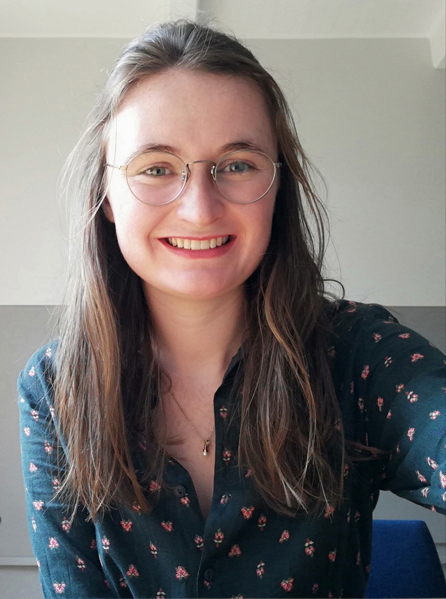

Students
Current Students
Third year students
Jordan - NLP
Justin - NLP
Kaitlyn Sparks - SNN
Honours students
Megan Cole - Spiking Neural Networks
Siphelele Danisa - Scaling and the Structure of Neural
Networks
An Investigation into Possible Connections between Deep Learning and the Renormalisation Group
Jeremy Du Plessis - Hopfield Networks
St John Grimbly - Climbing the Ladder: A Survey of Counterfactual Methods in Decision Making Processes
Claude Formanek - Graph Neural Networks
Bram Schönfeldt - Convolutional Neural Networks and Fast Radio Burst Classification
AIMS essay students Masters students
Lizelle Niit - Computational psychiatry
Mashudu Mokhithi - Mindset and mathematics pedagogy
Daniel Taylor - Saliency mapping in brain aging
Tom Makkink - Transformers in RL
Dean Rance - SNN's and evolving learning rules for RL
PhD students
Emma Platts - FRB detection using neural networks
Anthony Sayster - maths education
Rorisang Sitoboli - PEPT and machine learning
Ruach Slayern - Quantum states on closed surfaces
Graduated students
AIMS essay students
Yasser Salah Eddine Bouchareb - Machine learning applied to aerial images for vegetation detection (2018)
Al Zahraa Farrag - Information geometry (2014)
Mohammad Mansour - knots of light (2015)
Morris Munyoka - Image segmentation for medical imaging
Reinforcement learning -->
Linda Agyapomah Osei - Agyare - A survey of Reinforcement Learning algorithms
Roger Jeasy Bavibidila - Random Network Distillation and curiosity in Reinforcement Learning
Grace Ikhizama- Applications of machine learning in healthcare
Third years
Jeremy Du Plessis - Curiosity driven reinforcement learning
Siphelele Danisa - Exploitation and Exploration in NNs
Kabelo Serage
Taejun Park - Basics of Lie Algebra and Representation Theory
Robert Spencer - physics of hanging strings
Tslil Clingman - information geometry
Lizelle Niit - models of action potentials
Sam Wolksi - The quantum Hall Effect
Cara Pienaar - information geometry
Kyle Levin - information geometry
Dylan Nelson - Minimal surfaces in hyperbolic space
Chris Finlay - Deep learning and facial recognition
Ryan Le Roux - Hawking Radiation
Christoffel Goosen - Information Geometry
Dimakatso Rapotu - Quantising the open string
Jean-Jacques Du Plessis - Quantum computation and quantum information
Sithembiso Mashinini - Quantum computation and quantum information
Mita Ramabulana - Quantum computation and quantum information
Quincy Mmako - Image segmentation
Duncan Robertson - topological data analysis
Dumisani Zitha - Quantum computation - Shor's algorithm
Honours
Sabina Stefan
Robert Spencer - tensor networks
Lauren Denny - tensor networks
Tslil Clingman - information geometry
Emma Platts - information geometry
Lizelle Niit - The avian compass
Dean Rance - Maximization of information transfer in neural channels
Cara Pienaar - Differential equation models for malaria: sensitivity to model formulation
Dominic Bauer - Recommender systems
Luke Taylor - reinforcement learning and control theory
Jason Connie - quantum information theory
Storm Johnson - PET scans
Darien Hillebrand - GANs
Daniel Taylor - Deep Taylor Decomposition
Logan Guildenhuys - the universal function approximation theorem
Jibran Bodra - with Tom Dietel - ANNs and particle data
Jeremy Wilkinson - with Tom Dietel - ANNs and particle data
Masters
Alex Antrobus
Tslil Clingman
Alistair Grant-Stewart

Alexes Mes
Ruach Slayen
Jean-Gabriel - quantum chaos
Vladimir Makic - Rhino/poacher dynamics
PhD